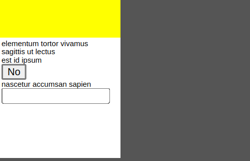

{
"event": "reset",
"goal": "Click on the \"No\" button.",
"target": "The \"No\" button",
"screenshot": "0000.png",
"sha256": "8ec3cd360a79afe3e02852f6fd9f982618ba299af2cf3ce66519a26d12d82178"
}{
"event": "reset",
"goal": "Click on the \"No\" button.",
"target": "The \"No\" button",
"screenshot": "0000.png",
"sha256": "8ec3cd360a79afe3e02852f6fd9f982618ba299af2cf3ce66519a26d12d82178"
}
{
"event": "first",
"executed_action": {
"action": "CLICK",
"value": null,
"position": [
0.06,
0.36
]
},
"executed_code": "mouse_click(29.88, 115.56)",
"reward": 0.0,
"terminated": false,
"truncated": false,
"task_info": {
"REWARD_GLOBAL": 0,
"RAW_REWARD_GLOBAL": 0,
"REWARD_REASON": null,
"DONE_GLOBAL": false,
"EPISODE_ID": 0,
"TASK_READY": true
},
"execution_error": "",
"screenshot": "0001.png",
"sha256": "8ec3cd360a79afe3e02852f6fd9f982618ba299af2cf3ce66519a26d12d82178"
}{
"event": "verification",
"phase": "immediate",
"verdict": {
"status": "not_achieved",
"privileged_oracle": true
}
}{
"event": "repair_prediction",
"prediction": {
"raw": "[0.06, 0.36]",
"point": [
0.06,
0.36
],
"metrics": {
"input_tokens": 327,
"model_invocations": 1,
"generated_tokens": 13,
"peak_cuda_allocated_bytes": 4637342208,
"peak_cuda_reserved_bytes": 5077204992
},
"generation_seconds": 0.41360833682119846,
"cache_key": "f113b8722f4d796cf9ae0be6477bfa1413d008e67330cb97d461eac0d0c733db",
"cache_hit": true,
"input_pixel_hash": "b54fbb05425199e31bc2b0ae5ce75f188745b6fd216081b5399a478da7ab140a",
"input_size": [
498,
321
],
"query": "The \"No\" button",
"local_point": [
0.06,
0.36
],
"crop": [
0,
0,
498,
321
],
"original_size": [
498,
321
],
"repair_mode": "plain",
"input_image": "repair-input.png",
"input_image_sha256": "8ec3cd360a79afe3e02852f6fd9f982618ba299af2cf3ce66519a26d12d82178"
}
}
{
"event": "retry_click",
"executed_action": {
"action": "CLICK",
"value": null,
"position": [
0.06,
0.36
]
},
"executed_code": "mouse_click(29.88, 115.56)",
"reward": 0.0,
"terminated": false,
"truncated": false,
"task_info": {
"REWARD_GLOBAL": 0,
"RAW_REWARD_GLOBAL": 0,
"REWARD_REASON": null,
"DONE_GLOBAL": false,
"EPISODE_ID": 0,
"TASK_READY": true
},
"execution_error": "",
"screenshot": "0002.png",
"sha256": "8ec3cd360a79afe3e02852f6fd9f982618ba299af2cf3ce66519a26d12d82178"
}{
"event": "episode_end",
"id": "click-button-20018-none",
"scene_id": "click-button-20018",
"task": "click-button",
"seed": 20018,
"regime": "none",
"strategy": "oracle_plain",
"success": false,
"reason": "task_not_completed",
"prefix_matched": true,
"waits": 0,
"repairs": 1,
"logical_actor_calls": 2,
"invalid_predictions": 0,
"source_prediction_reused": true,
"verifier_calls": 1,
"verifier_seconds": 1.613423228263855e-05,
"trigger_strategy": "oracle",
"repair_policy": {
"mode": "plain",
"crop_fraction": 0.6,
"feedback_sha256": "cbf940774ae19e0344e50f9a7c1b9171d631c54ed506739b921be35510b12cc7",
"uses_teacher": false,
"coordinates_in_feedback": false
},
"triggered_recovery": true,
"reward": 0.0,
"terminated": false,
"truncated": false,
"task_info": {
"REWARD_GLOBAL": 0,
"RAW_REWARD_GLOBAL": 0,
"REWARD_REASON": null,
"DONE_GLOBAL": false,
"EPISODE_ID": 0,
"TASK_READY": true
},
"environment_steps": 2,
"new_actor_generations": 0,
"elapsed_seconds": 3.2302488926798105
}